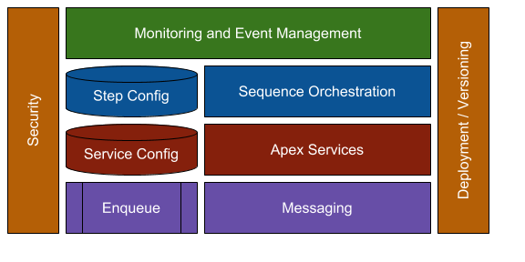

The Services Package is the only enterprise grade service container native to Salesforce. It provides automatic bulkification, automatic exception handling, and automatic transaction management. Any apex code executed inside the container becomes context agnostic.
You can:
